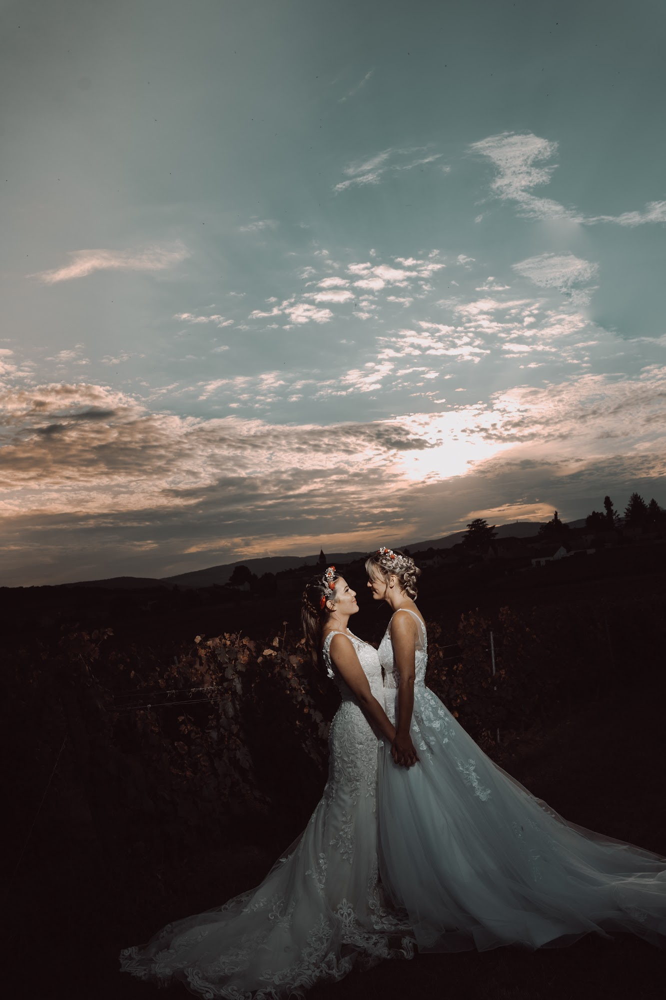
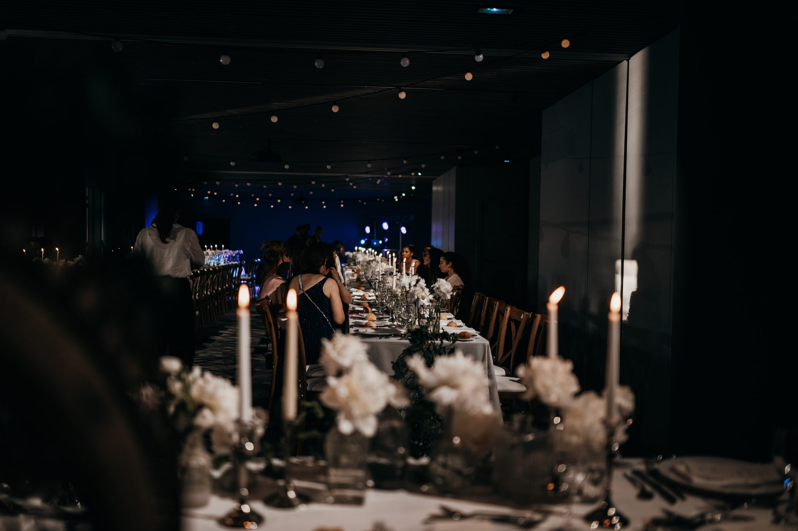
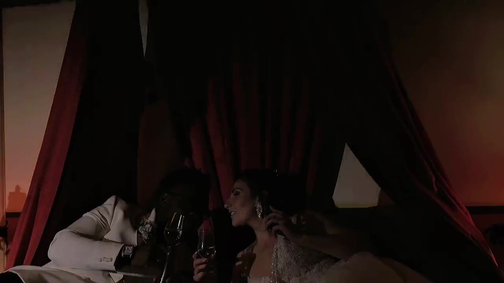
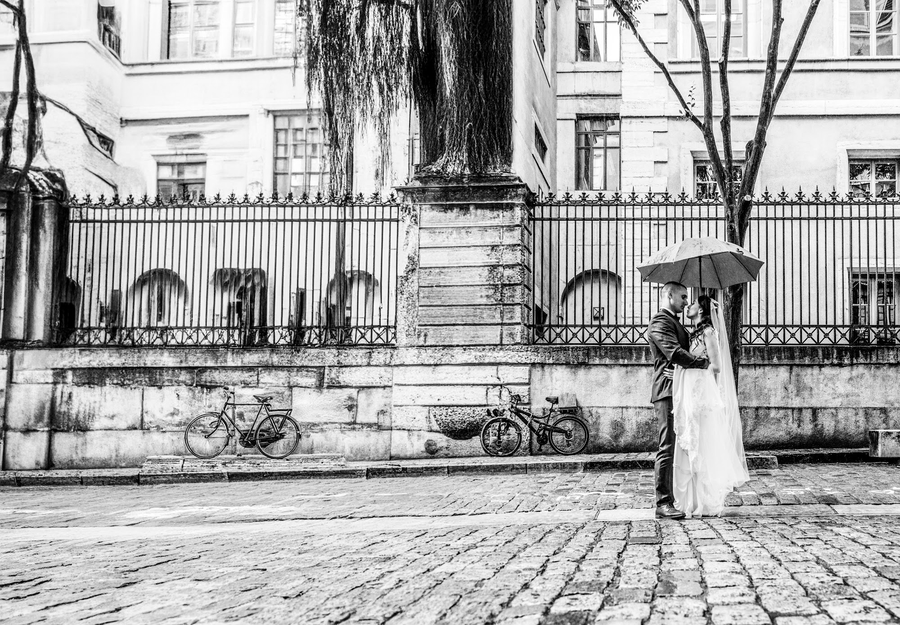

Planning a Winter Wedding in France: The Charm of the Off-Season
While most couples dream of a summer celebration, planning a winter wedding in France reveals a unique, cozy, and deeply romantic atmosphere. Far from the summer heat and crowds, the winter months offer beautiful soft light and elegant indoor venues. As a photographer and videographer, I find these cooler months ideal for crafting timeless, emotional images.

Soft Winter Light: Perfect for Romantic Portraits

One of the best advantages of a winter wedding in France is the gentle quality of natural light. During summer, harsh mid-day sun creates strong shadows on faces. In winter, the sun stays low on the horizon, casting a soft, golden glow that flatters skin tones naturally.
This gentle illumination allows us to capture stunning couples portraits without worrying about bright glares. Plus, with the early sunset, we can easily enjoy a breathtaking golden hour session right before moving indoors for dinner.
Exclusive Venues and Cozy Atmospheres
Choosing an off-season date opens up doors to prestigious châteaux and private estates near Lyon, the French Alps, or the Beaujolais region with much greater availability. Booking your dream venue becomes far simpler than during peak summer months.
Winter allows you to fully embrace cozy indoor spaces. Historic stone fireplaces, warm lounge areas, and grand halls bring guests together naturally, creating an intimate setting where everyone feels right at home.

Sophisticated Winter Wedding Fashion

Crisp weather invites rich textures and stylish layering. Brides can opt for elegant long-sleeve lace gowns, velvet cloaks, or faux-fur wraps that look stunning on camera.
Grooms look equally sharp in heavy wool, tweed, or velvet suits. These rich fabrics add texture to your wedding gallery while keeping everyone comfortable and relaxed throughout the day.
Candlelight and Timeless Reception Styling
As darkness falls early, lighting becomes a key design element. Tables filled with candles, glowing chandeliers, and warm festoon lights transform any room into an enchanting space.
From a photographer and filmmaker's perspective, this contrast between the cold exterior and warm interior produces deeply atmospheric images and cinematic film scenes.

A More Relaxed Experience for You and Your Guests
During summer, friends and family often balance multiple weddings and travel plans. A winter celebration arrives as a welcome highlight during the quieter months of the year.
Your loved ones are more available, present, and ready to celebrate warmly. The day feels less rushed, allowing you to spend genuine time connecting with every single guest.

Frequently asked questions
What happens if it rains or snows on our winter wedding day?
Weather changes are part of the story. We can stay warm indoors using beautiful architectural features of your château, or venture outside briefly with stylish umbrellas for artistic, romantic portraits.
What is the best timeline for photos during a winter wedding in France?
Since daylight fades around 5:00 PM, scheduling your ceremony for early afternoon (around 1:30 PM or 2:00 PM) allows us to maximize natural light for family groups and couple portraits.
Can video footage look good in low-light winter settings?
Yes, modern high-end cameras perform exceptionally well in low light. The warm ambient glow of candles and indoor lighting adds a rich cinematic depth to your wedding film.
Are châteaux near Lyon equipped for winter weddings?
Most historic venues in the region feature efficient heating, large fireplaces, and spacious indoor halls specifically designed to host comfortable winter events.
Are you planning a winter wedding in France? Send me a message to discuss your vision and let's craft a timeless photo and video reportage together.
Let’s talk about your project